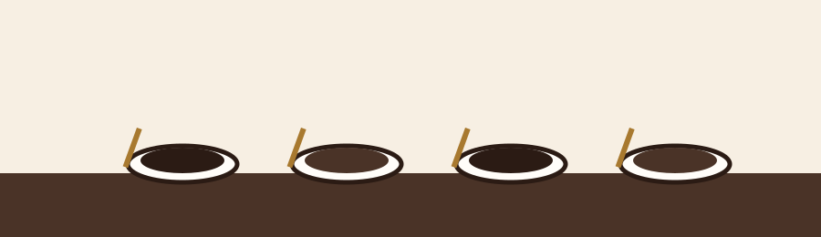

Recetario & Catas
Calculadora de bebidas y hoja de cata
Dos herramientas en una: arma cualquier bebida base en segundos y practica tu paladar con una hoja de cata digital.
Parte 1 — Calculadora de bebidas
Parte 2 — Cómo hacer una cata (cupping)

- Muele el café más grueso de lo habitual y déjalo reposar 4 minutos con agua caliente, sin remover.
- Rompe la costra empujando suavemente los granos hacia el fondo mientras acercas la nariz a la taza.
- Aspira el aroma profundamente antes de que se disipe: es la primera impresión del café.
- Sorbe con fuerza para atomizar el café en toda la boca y evalúa acidez, cuerpo y dulzor.
- Anota tus impresiones en la hoja de cata mientras el café se enfría y cambia de carácter.
Hoja de cata interactiva
Mueve cada control para puntuar de 1 a 10. El puntaje total se actualiza al instante.
Puntaje total
25 / 50